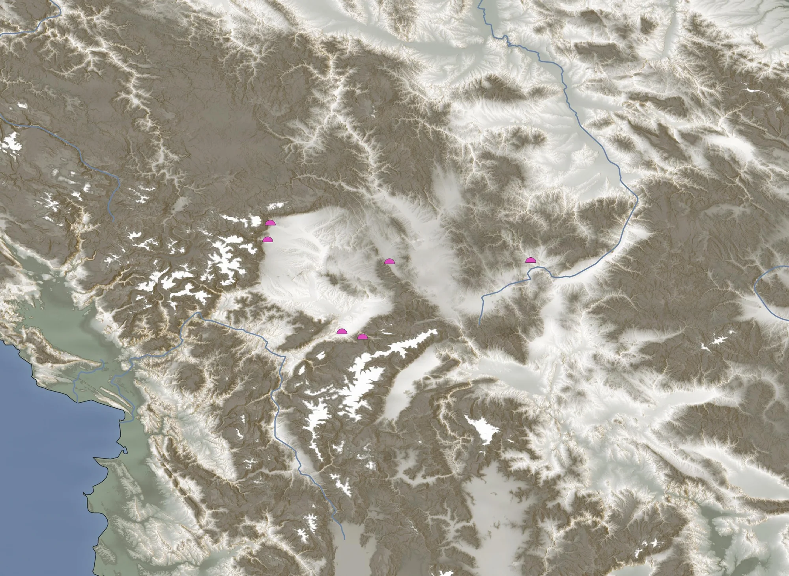
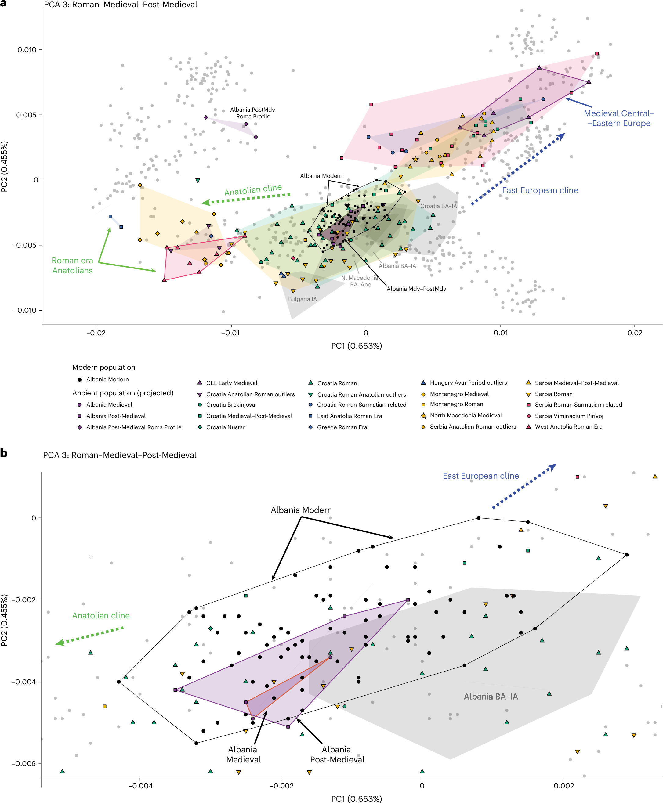
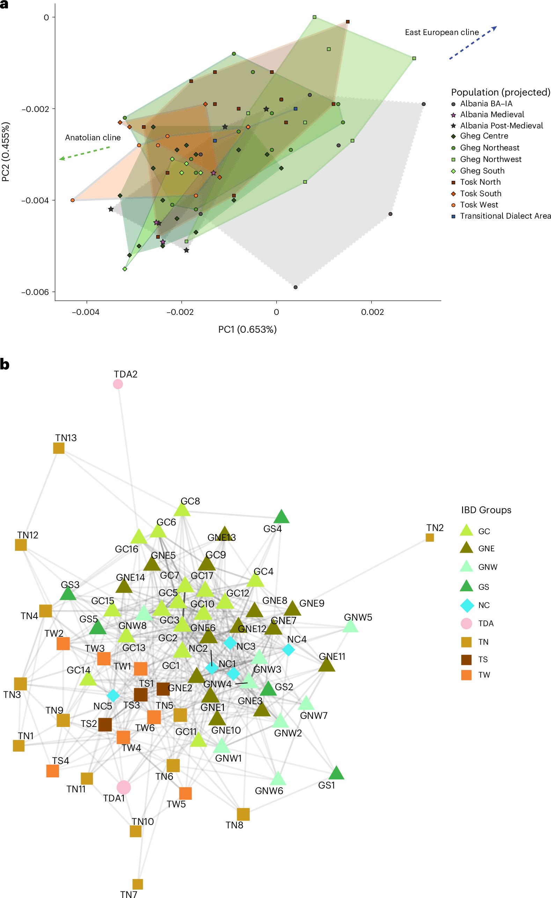
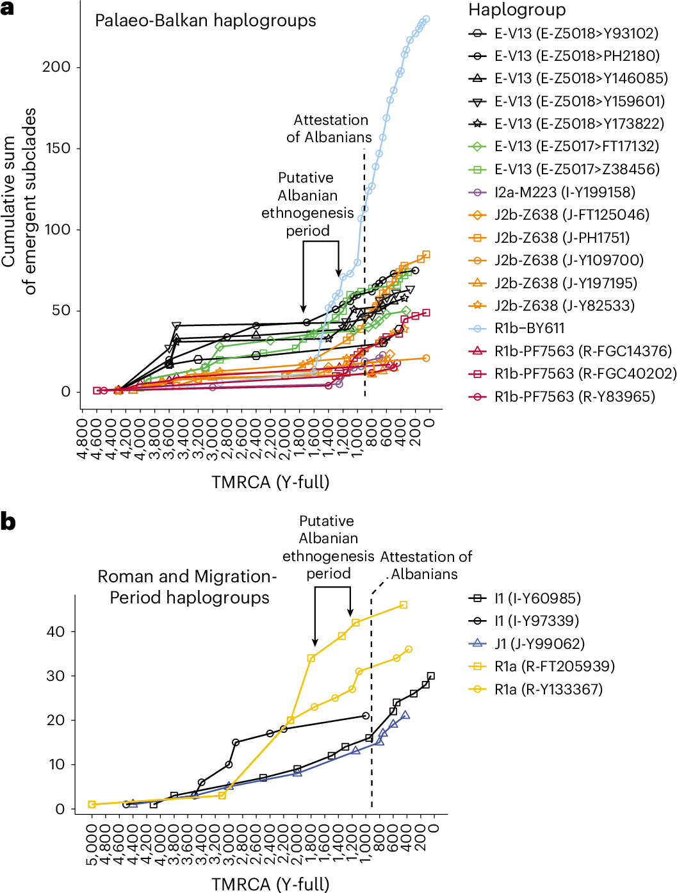

An open inquiry into Albanian origins through the lenses of ancient history, archaeogenetics, and comparative linguistics.
Albanians are one of Europe's oldest attested peoples, yet their origins have long been obscured by sparse records and contested histories. Arbërikon is dedicated to exploring these questions rigorously.
Drawing on the latest ancient DNA studies, comparative linguistic analysis, Byzantine chronicles, and Illyrian archaeological evidence, this project situates the Albanian people within the broader story of Balkan prehistory and European prehistory.
A chronological look at the major epochs that shaped Albanian identity, from the Bronze Age Balkans through independence in 1912.
The demographic substrate for later Illyrian and Albanian populations takes shape. Bronze Age communities across the western Balkans develop distinct material cultures, exhibiting genetic profiles that will persist, largely uninterrupted, for millennia. Ancient DNA confirms deep continuity from this period into medieval Albanian populations.
The Illyrians emerge as a loose collection of tribes across the northwestern Balkans. Their language — known only through onomastics and glosses — has long been proposed as a candidate for Albanian's ancestor. Greek and later Roman sources record extensive interaction, colonization, and ultimately conquest of Illyrian territories.
Rome's conquest of Illyricum brings deep Latinate influence into the region. Albanian preserves hundreds of Latin loanwords predating the Slavic migrations, evidence of intensive contact during this period. The Via Egnatia and Roman provincial administration cement the region into a broader Mediterranean world.
The great Slavic migrations reshape the Balkans ethnically and linguistically. Ancient DNA evidence shows that while neighboring populations absorbed 30–50% Eastern European ancestry, early medieval Albanians absorbed only 10–20%, reflecting geographic insularity and demographic resilience in mountainous terrain. The Shkumbin River emerges as a long-term ethnolinguistic boundary.
The Byzantine historian Michael Attaliates makes the earliest unambiguous reference to "Albanoi" as a distinct people. The Chronicle of the Priest of Duklja similarly attests Albanian presence. This is not their origin — only the moment they enter the surviving written record, by which time they were already a well-established people.
George Castriot, known as Skenderbeg, unites the Albanian lords in resistance to the Ottoman advance, holding the Balkans for 25 years after the fall of Constantinople. His legacy becomes the cornerstone of Albanian national identity, and his double-headed eagle heraldry is adopted as the modern Albanian flag.
Following Skenderbeg's death in 1468, Albanian resistance gradually crumbles. The fall of Shkodër to the Ottomans in 1479 marks the complete incorporation of Albanian lands into the Ottoman Empire. Mass waves of Albanians emigrate to southern Italy, Sicily, and Greece — founding the Arbëreshë and Arvanite communities that survive to this day.
Powerful Albanian lords carve out semi-independent domains within the Ottoman state. Ali Pasha Tepelena (c. 1740–1822), the "Lion of Janina," effectively governs Epirus and much of southern Albania from his court at Ioannina, courted by Napoleon and Lord Byron alike. In the north, the Bushati dynasty rules the Pashalik of Shkodër for over a century, conducting independent foreign policy and fielding their own armies.
In the aftermath of the Russo-Turkish War, the Treaty of Berlin threatens to partition Albanian-inhabited lands among Serbia, Montenegro, and Greece. Albanian leaders convene in Prizren and form the League of Prizren — the first modern Albanian political organization — to resist partition and demand autonomy within the Ottoman Empire. The League marks the beginning of the Rilindja Kombëtare (National Renaissance).
As the First Balkan War strips the Ottoman Empire of its remaining European territories, Ismail Qemali raises the flag of Skenderbeg in Vlorë and declares Albanian independence on November 28, 1912 — the date still celebrated as Flag Day. The following year, the Great Powers recognize Albania as a sovereign state, though the borders drawn at the Conference of London leave large Albanian populations outside the new state in Kosovo, Macedonia, and Greece.
The Kosovo Liberation Army (Ushtria Çlirimtare e Kosovës — UÇK/KLA) takes up arms against Yugoslav rule, and the conflict escalates into a campaign of expulsion against Kosovo's Albanian majority, displacing more than 800,000 people and killing over 13,000. A NATO air campaign from March to June 1999 ends the war and forces the withdrawal of Yugoslav forces; Kosovo is placed under United Nations administration (UNMIK), bringing the Albanian populations left outside the 1913 borders back to the center of the question.
The Assembly of Kosovo declares independence from Serbia, establishing the Republic of Kosovo — the second Albanian-majority sovereign state. It is recognized by the United States and most EU members, and in 2010 the International Court of Justice finds that the declaration did not violate international law.
Seven snapshots of Kosovo's deep past, from the first cave-dwellers to the threshold of the Dardanian kingdom. Select a period to trace how settlement and culture evolved across the western-Balkan terrain.

Archaeogenomics has transformed our understanding of Albanian origins. The 2026 Nature Human Behaviour study provides the first comprehensive ancient DNA picture of the Albanian people across time.
Medieval Albanians preserved 68–84% of their Bronze and Iron Age western Balkan ancestry, a remarkably high proportion. This places them among the most continuous populations in Europe, with a genetic identity largely established by 800 CE.
In contrast to neighboring Slavic-speaking Balkan populations, Albanians absorbed only 10–20% Eastern European (steppe-related) ancestry during the Slavic migrations of the 6th–9th centuries. Higher proportions appear near the Albanian-Montenegrin border — zones of longest Slavic contact.
Despite centuries of political separation and linguistic divergence, northern Gheg and southern Tosk Albanians share identical medieval genetic profiles. The dialect boundary (the Shkumbin River) is a linguistic, not a genetic, divide — both groups descend from the same ancestral stock.
Albanian ancestry decomposes into Neolithic Anatolian-related farmer ancestry, Western Hunter-Gatherer (WHG) ancestry, and steppe-related Indo-European ancestry introduced during the Bronze Age. This tripartite structure mirrors much of southern Europe, with notably elevated WHG proportions.
Arbëreshë communities in southern Italy, established in the 15th–16th centuries during Ottoman expansion, preserve a medieval Albanian genetic profile frozen in time. Their DNA closely resembles 13th–14th century Albanian samples, offering a unique window into pre-Ottoman Albanian genetics.
Albanian Y-DNA is dominated by haplogroup E-V13 (spreading via the Neolithic), R1b (western steppe), and J2b (western steppe). E-V13 reaches particularly high frequencies among Albanians — among the highest in Europe.
Every point is a documented Albanian Y-chromosome result — 2,127 lineages across the Albanian lands and diaspora. Hover any marker for its district, region and subclade. Toggle haplogroups in the legend.
Key figures from the landmark ancient-DNA study tracing Albanian ancestry to Bronze and Iron Age western Balkan populations, mapping dialectal genetic structure, and dating the formation of the principal Albanian Y-DNA lineages.

Modern Albanians (black points) sit tightly between the Anatolian and East European clines, overlapping Albania Bronze–Iron Age samples. Medieval and Post-Medieval Albanians cluster together, showing deep genetic continuity with the present-day population.

Identity-by-descent sharing among present-day Albanians (>8 cM). Despite descending from a shared founding population, Gheg and Tosk speakers form distinctly separated IBD clusters — consistent with mating networks long divided along the Shkumbin line.

Cumulative emergence of new subclades (from Y-full TMRCA estimates) for the principal palaeo-Balkan (E-V13, J2b-L283, R1b) and Migration-Period haplogroups. The expansion of lineages clusters around the putative Albanian ethnogenesis period, before the first historical attestation of the Albanians.
Albanian forms its own independent branch of the Indo-European family — its nearest relatives are all extinct. Its unique position allows linguists to reconstruct contact histories and migration patterns across millennia.
Characterized by nasal vowels, preserved Latin nasals, and archaic morphological features. Gheg dialects show greater internal variation, with distinct regional varieties in Kosovo, North Macedonia, Montenegro, and northern Albania. Considered phonologically more conservative in several respects.
Distinguished by the rhotacism of intervocalic /n/ to /r/ (e.g., Gheg venë → Tosk verë, 'wine') and loss of nasal vowels. Standard Albanian (Gjuha Standarde) is based primarily on Tosk phonology and Gheg vocabulary, codified in the 1972 Tirana Congress.
Albanian has no living close relatives. Its nearest proposed kin — Illyrian and Messapic — are all extinct and known only through fragments. This makes Albanian invaluable for understanding the pre-Slavic Balkans, and notoriously difficult to place in the IE family tree.
Albanian contains over 630 Latin loanwords predating the arrival of Slavic languages, covering agriculture, religion, trade, and domestic life. The depth of this stratum confirms prolonged and intensive contact with Roman civilization during the 1st–5th centuries AD.
Beneath the Latin layer lies an older one: roughly two dozen words borrowed directly from Ancient Greek, mostly farming and tool vocabulary — e.g. drapër 'sickle' (δρέπανον), lakër 'cabbage' (λάχανον), mokër 'millstone', qershi 'cherry' (κερασία), presh 'leek', shpellë 'cave'. Their sound-shape proves great age: Greek χ surfaces as Albanian k (not h), and φ and β as p and b — meaning they were borrowed while those Greek sounds were still aspirated stops, before the Roman period. This places the ancestors of the Albanians in contact with Greek-speakers deep in antiquity, reaching back to the earliest Greek presence on the Illyrian coast — where colonies such as Epidamnos were founded in the 7th century BC. (G. Spaans, Linguistique Balkanique, 2024.)
Romanian shares a stratum of "substrate" vocabulary with Albanian — words for pastoralism, terrain, and rural life. Rather than a shared ancestral language, comparative linguistics identifies these as Proto-Albanian loanwords borrowed into Romanian, reflecting close early contact between Albanian-speakers and the ancestors of the Romanians. The correspondence points to where Proto-Albanian was spoken, not to a deeper genetic relationship. (De Gruyter, Handbook of Comparative and Historical Indo-European Linguistics.)
The Arbëreshë dialects of southern Italy preserve 15th-century Albanian — a linguistic time capsule. They maintain archaic features lost in modern Standard Albanian, making them invaluable for historical reconstruction. Over 50 Arbëreshë communities survive today in Calabria, Sicily, and elsewhere.
Through systematic comparison with attested IE branches and careful analysis of loanword strata, linguists have reconstructed aspects of Proto-Albanian phonology and lexicon, allowing a partial picture of what was spoken before the Roman contact period that left such deep marks on the modern language.
The main phonological differences between Gheg and Tosk lie in vowel pronunciation, and Gheg's use of nasalization (largely lost in Tosk and Standard Albanian).
A searchable digitisation of Idris Ruka's English–Albanian Dictionary (Tirana, 2006) — roughly 15,600 headwords with pronunciation guides and Albanian translations. The several hundred most common everyday words carry hand-verified translations (marked ✓); the rest are from OCR of the print edition, so occasional scanning artifacts may appear in older or rarer entries.
The Albanian language is not closely related to any surviving Indo-European branch, making it both a puzzle and a key to unlocking the pre-Slavic Balkans.
Peer-reviewed studies, monographs, and primary sources that form the scholarly backbone of Albanian historical and genetic research.
The landmark study in Nature Human Behaviour (2026) provides the first comprehensive ancient genomic analysis of Albanian populations, tracing their ancestry to Bronze and Iron Age western Balkan populations and resolving the question of Slavic admixture.
A landmark ancient-DNA study of 727 individuals across the "Southern Arc" — Anatolia, the Caucasus, and southeastern Europe — over 10,000 years, tracing the Yamnaya steppe expansion into the Bronze Age Balkans, a key ancestry layer underlying later Balkan and Albanian populations.
A comprehensive synthesis of the historical, archaeological, linguistic, and genetic evidence for Albanian origins, covering the Illyrian hypothesis, the Dacian/Thracian alternatives, and the debate over where proto-Albanians were located during the Slavic migrations.
An overview of the structural, phonological, and lexical correspondences between Albanian and Romanian/Aromanian — including the substrate vocabulary now widely analysed as Proto-Albanian loanwords into Romanian — and what it reveals about early contact and the location of Proto-Albanian in the Balkans.
A community discussion synthesizing recent genetic findings with linguistic evidence to explore what the ancient DNA record tells us about where Albanian-speakers were during the Slavic migrations and how they maintained genetic continuity.
GreekReporter's coverage of the 2026 Nature study, contextualizing the findings within the broader Balkan historical narrative and discussing implications for understanding Albanian, Greek, and South Slavic ethnic formation in the medieval period.
Primary source excerpts, genetic findings, and historical vignettes from the @arberikon archive.
By the 1830s, the Albanian Tosk chieftain Tafil Bouzi effectively governed Epirus, western Macedonia, and parts of Thessaly, commanding several thousand armed Albanian men. Russian consular records compare him directly to Ali Pasha of Ioannina, noting that he too sought to carve an independent state from Ottoman authority.
Recurrent raids by armed bands under the leadership of Tafil Bouzi, an Albanian Tosk chieftain who virtually ruled Epirus, western Macedonia, and parts of Thessaly in the 1830s, caused unrest among the peasantry. Backed by a force of several thousand Albanian warriors, Tafil Bouzi, like his better-known predecessor Ali Pasha of Ioannina, menaced Ottoman forces and aimed to carve out an independent state.Lucien J. Frary, Russia and the Making of Modern Greek Identity, 1821–1844 (Oxford University Press, 2015)
The diffusion of the 3 core Albanian Y-chr lineages. Map result was created by subtracting the non E-V13, R-M269 and J-L283 subclades.
The 2026 Nature Human Behaviour paper found that despite centuries of dialectal separation, Ghegs and Tosks share identical Medieval ancestry and descend from the same founding population of roughly 8,000–11,000 people.
Genetic ContinuityDavranoglou L-R., Lauka A., Aristodemou A. et al., Ancient DNA evidence for the history of the Albanians, Nature Human Behaviour (2026) · Analysis of 6,000+ ancient West Eurasian genomes and 74 newly sequenced present-day Albanians across all dialectal groups
Ghegs and Tosks and all of their subpopulations overlapped on the PCA and occupied the same PC with Medieval and Post-Medieval samples from Albania. The lack of substructure between Ghegs and Tosks suggests that both dialectal groups derive from the same Medieval population.
Separated Mating Networks
Despite these similarities, interdialectal IBD clustering showed that the two dialectal groups are distinctly separated from each other, which is consistent with mating networks that have been separated for a long period of time. This suggests distant shared ancestry for all Albanians but that more recent ancestral ties are locally clustered.
The Bektashi's largest period of growth in Albania came under Ali Pasha Tepelena, who utilised the mystic order as spies and diplomats against the Porte.
The rapid rise of the Bektashi in southern Albania is said to be linked particularly to Ali Pasha Tepelena, the Lion of Janina, who is alleged to have been affiliated with the Bektashi and to have promoted the order. The English historian Frederick William Hasluck suggests convincingly that Ali Pasha simply made use of the Bektashi to expand his realm and power against the will of the Sultan in Istanbul. Hasluck's Scottish wife, the anthropologist Margaret Hasluck, notes that he used Bektashi dervishes as spies and diplomatic agents.Robert Elsie, The Albanian Bektashi: History and Culture of a Dervish Order in the Balkans (I.B. Tauris) · Ali Pasha Tepelena (c. 1740–1822)
In 1809–1810, J.C. Hobhouse observed that while Greeks and Turks identified by religion, Albanians stood apart. When asked what they were, they replied: "I am an Albanian." Christian or Muslim, they carried arms, served together, and put ethnicity above faith.
The Christians, who can fairly be called Albanians, are scarcely, if at all, to be distinguished from the Mahometans. They carry arms, and many of them are enrolled in the service of Ali, and differ in no respect from his other soldiers. There is a spirit of independence and a love of their country, in the whole people, that, in a great measure, does away the vast distinction, observable in other parts of Turkey, between the followers of the two religions. For when the natives of other provinces, upon being asked who they are, will say, "we are Turks" or, "we are Christians," a man of this country answers, "I am an Albanian."J. C. Hobhouse, A Journey through Albania and Other Provinces of Turkey in Europe and Asia (Philadelphia: M. Carey and Son, 1817) · John Cam Hobhouse (1786–1869), English statesman and travel writer; travelled through Albania with Lord Byron, 1809–10
Knight noted that the Turks were never able to truly subjugate the Albanians. They held a few towns, but the countryside was controlled by independent tribes ruling themselves under their own laws. A Turkish pasha couldn't even cross the mountains without first securing permission and safe-conduct from the local Albanian consul.
To say that the Turks have subjugated the Arnauts is not strictly correct. Their position is something like that of the French in the remoter parts of Algeria. They hold certain towns, the intervening country being occupied by independent tribes, governing themselves, having their own laws. Why, if a Turkish pasha wishes to traverse the mountains through the district of a certain tribe, he must consult the Boulim-Bashi, the town-representative or consul of that tribe, obtain his permission, his safe-conduct, ere he dare undertake the journey.E. F. Knight, Albania: A Narrative of Recent Travel (London: Sampson Low, Marston, Searle, & Rivington, 1880) · Edward Frederick Knight (1852–1925), English barrister, journalist and travel writer; correspondent for The Times
At the peak of the Summer Offensive in 1998, the KLA had cut major roads across Kosovo and controlled 40 percent of the territory.
By mid-June, the KLA had closed the Peja-Gjakova road, and the Serbs had lost control of the Prishtina-Peja and Mitrovica-Peja roads. Only the Prishtina-Prizren road remained open. On June 24, the KLA seized the Bardh coal mine near Prishtina. It controlled towns throughout Drenica and Dukagjini, and for one brief period, Ferizaj — well outside the territory in which the KLA had traditionally been strong. At the end of June, the KLA was reported to control 40 percent of the territory in Kosovo.Henry H. Perritt Jr., Kosovo Liberation Army: The Inside Story of an Insurgency (University of Illinois Press, 2008)
Albanians were the most ethnically endogamous group in 1981 Yugoslavia — 8,545× more likely to marry within their group than outside it. Serbs were the least, at just 23×.
This table shows how strongly different ethnic groups in former Yugoslavia, in 1981, tended to marry within their own group.Endogamy data: Former Yugoslavia census, 1981 (N = 5,428,201 couples)
Albanians have the highest endogamy: Exp(B) = 8545. This means they had 8,545 times higher odds of marrying another Albanian than someone from a different group.
Serbs have the lowest endogamy: Exp(B) = 23, meaning they had only 23 times higher odds of marrying another Serb than an outsider — far less than any other group listed.
Albanians were the most closed in terms of marriage patterns, showing the strongest tendency to marry within their own ethnic group and the lowest tendency toward intermarriage, while Serbs were the most open, with the weakest tendency to marry within their group and the highest tendency toward intermarriage.
Besides having a rich native lexicon of pastoralism indicating the early Proto-Albanian lifestyle, a plethora of loans received from Doric Greek as well as Proto-Albanian loans in Romanian show Proto-Albanian more or less occupied the same region it does today.
A widespread opinion regards the older category of the Albano-Rumanian common lexicon as the reflex of an ancient substratum of Thracian, Dacian, or unknown origin. Aside from a few single words of perhaps non-Indo-European origin (Albanian modhullë 'yellow vetchling' ~ Rumanian mazăre 'pea'), the largest part of this alleged substratum common to both Albanian and Rumanian consists simply of loan-words in Rumanian from Proto-Albanian, e.g. Rumanian ţarc 'pen for young livestock' from Proto-Albanian */tsárka-/ (Modern Albanian thark).Ed. Jared Klein, Brian Joseph & Matthias Fritz, Handbook of Comparative and Historical Indo-European Linguistics, HSK 41.3, De Gruyter Mouton
The Greek loan-words are of various chronological origins. The oldest are of Ancient Greek (Doric) provenance, mostly designations of vegetables, spices, fruits, animals, and tools (cf. Old Geg drapënë, modern Albanian drapër 'sickle'; Old Geg lakënë, modern Albanian lakër 'cabbage'; presh 'leek'). These loans resulted from the earliest contacts between Greeks — either colonists of the Adriatic coastal regions or more probably Greek merchants in the Balkan hinterland — and Proto-Albanians from the 8th century BCE on.
According to the Diachronic Phonetic-Etymological Dictionary of Albanian (DPEWA, LMU München), ~60% of Albanian vocabulary is inherited from Proto-Indo-European through Proto-Albanian. The remaining 40% consists of loanwords: Turkish (~16%), Latin/Romance (~10%), Slavic (~6%), and Greek (~1.5%).
The Albanian lexicon of approximately 5,000 documented entries reflects a layered etymological history. Roughly 60% of the vocabulary is inherited from Proto-Indo-European through Proto-Albanian, while the remaining 40% consists of loanwords accumulated over two millennia of contact with neighboring languages and cultures.DPEWA — Diachronisches Phonetisch-etymologisches Wörterbuch des Albanischen, LMU München · Demiraj, B. (1997); Boretzky, N. (1975–76); Bonnet, G. (1998); Ylli, X. (1997) · dpwa.gwi.uni-muenchen.de
The largest loan stratum derives from Turkish (~16%), reflecting five centuries of Ottoman rule, followed by Latin and Romance (~10%), Slavic (~6%), and Greek (~1.5%) — the smallest loan stratum despite centuries of Greco-Albanian contact, consistent with Proto-Albanian's inland Balkan position away from the Aegean coastal zone.
Are you of Albanian descent and have taken a Y-DNA test? Submit your haplogroup and origin to help build a fuller picture of Albanian paternal lineages. For an accurate map, give your paternal line's place of origin — ideally the ancestral village — rather than just where you were born. Sharing your raw data file is optional.